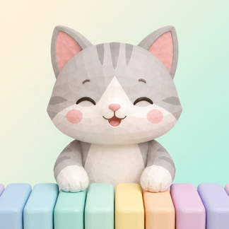

さくらさくらをドレミで弾こう
最初のメロディをドレミで
ラ ラ シ
ラ ラ シ
ラ シ ド シ ラ シ ラ ファ
ミ ド ミ ファ ミ ミ ド シ
Plush Keys の編曲で、最初に出てくるメロディの音です。曲の最後まで白鍵だけで弾けます。
この曲について
江戸時代に、箏（こと）を習いはじめた人のための曲として弾かれていたといわれる、日本の古い歌です。
日本を代表する歌として、海外でもよく知られています。
Plush Keys で弾くには
- アプリを開いて「曲を弾く」を選びます。
- 上の検索に「さくら」と入れて、曲を選びます。
- 上から落ちてくる色の帯が下の線に来たら、同じ色の鍵盤を押します。むずかしいときは「やさしい」から。
ゆっくり、箏の音をイメージして。「ラ ラ シ」のくり返しから始まります。
無料の曲です。
よくある質問
楽譜が読めなくても弾けますか？
はい。Plush Keys では、上から落ちてくる色の帯と同じ色の鍵盤を押すだけで弾けます。ドレミや楽譜を覚えていなくても大丈夫です。慣れてきたら五線譜の表示にも切り替えられます（プレミアム）。
無料で弾けますか？
はい。「さくらさくら」は無料の曲です。ダウンロードしてすぐに弾けます。
本物のピアノや電子ピアノでも弾けますか？
iPhone や iPad の画面の鍵盤で弾けるほか、USB や Bluetooth の MIDI キーボード・電子ピアノをつなげば、本物の鍵盤でも色の帯に合わせて弾けます。
楽譜が読めなくても、色をたどれば「さくらさくら」が弾けます。